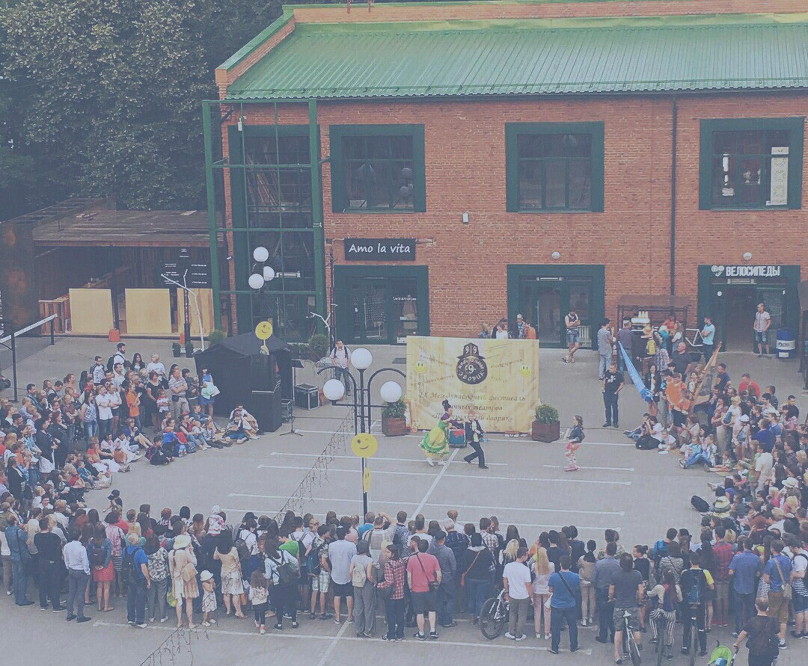

Новая сказка!
Мы написали новую часть сказки! Читай!
Сказка. Нибелунги. Часть 1
Как только по земле пролетит первый морозный ветер, и от дерева отклеивается первый лист, гномы сразу предпринимают попытку, так сказать, восстановить природный баланс. Методом возвращения листвы в прежние ее положение, но как мы понимаем, у них вновь ничего не выходит. И что же остается делать порядочному гному в такие моменты? Ему остается только одно: наблюдать. Как раз в одно из таких наблюдей произошла одна интересная история, а после она была сразу перенесена на шершавую кору дуба самыми великими гномскими письмописцами...
Продолжение сказки!
Мы написали уже вторую часть! Читай!
Сказка. Нибелунги. Часть 2
Уже упал сотый лист, значит уже конец осени , знали гномы . Постаревшие гномы, пропускавшие первую часть ежегодного ритуала лишь незаметно хихикали над носящейся из стороны в сторону молодежью, пытающейся ловить падающие листья и вернуть их на место. Но хруст ветки и звук человеческих шагов, доносившееся из глубины лесной опушки, заставил гномов следовать привычному плану эвакуации, а именно, мгновенному сливанию с окружающей средой. Можно даже сказать, что стремительному внедрению непосредственно в нее, так как резко разбегающаяся охоющая толпа толстеньких коротышек, плюхающаяся в ближайший пруд и пытающаяся заползти под корень дуба, совсем не походит на слияние. Ха, почему, думаете, у людей до сих пор так и не получилось нас найти? Все элемертарно, как шишка по весне, мы просто хорошо прячемся. Но на этот раз...

Фестиваль Всюду Чудо
Наш первый самостоятельный фестиваль , который мы организовываем !!!
Приходи на фестиваль
Дорогие друзья!!!В дни осенних каникул вас ожидает грандиозное событие 5 ноября 2017 года, в семейном парке активного отдыха "Хлоп Топ" в ТЦ "Капитолий" состоится театральный фестиваль "ВсюдуЧудо" Как давно вы забывали о своей "взрослости"? Как давно вы переставали думать о заботах? Как давно вы последний раз самозабвенно переживали за колобка, который от всех ушёл, но лиса-разбойница его перехитрила? Не отвечайте. Мы и так всё знаем, и именно поэтому, 5-го ноября решили подарить вам эту возможность. Забудьте о цифрах в вашем паспорте, ведь они не значат ничего, если дело касается искреннего и светлого. Приходите, участвуйте, помогайте героям интерактивных спектаклей и не жалейте своих ладошек. Все остальное берем на себя! Театральный фестиваль "ВсюдуЧудо" - чудо повсюду. Начало в 14:00, в программе: Театр Летающих Вещей (https://vk.com/teatr_antigravitator) интерактивный спектакль "Супер Ы" Театр "НАСТЮЛЯ" (https://vk.com/inter_spektakli) интерактивный спектакль "Теремок" Театр "Ридикюль" (https://vk.com/teatr_ridicule) интерактивный спектакль "По щучьему велению" Театр Del ARTE (https://vk.com/teatr_delarte) интерактивный спектакль "Гусёнок Дорофей" Театр Del ARTE (https://vk.com/teatr_delarte) интерактивный спектакль "Нибелунги" P.S. Расписание всех спектаклей на 05.11.2017 вывесим в группе в самое ближайшее время (812) 332-52-99
Новый спектакль!
ПРЕМЬЕРА!
Премьера нового спектакля
Дорогие друзья ! Где спрятан волшебный Золотой ключик? Заветную тайну тарабарского короля подслушает смешной длинноносый человечек. И никакие козни Карабаса-Барабаса, Лисы Алисы и кота Базилио не помешают артистам найти потайную дверцу! Не пропустите - 1 сентября, в 17:00 у нас состоится интерактивный спектакль "Золотой Ключик".
Новая сказка!
Мы написали новую часть сказки про Нибелунгов! Читай!
Сазка. Нибелунги. Часть 1
Как только по земле пролетит первый морозный ветер, и от дерева отклеивается первый лист, гномы сразу предпринимают попытку, так сказать, восстановить природный баланс. Методом возвращения листвы в прежние ее положение, но как мы понимаем, у них вновь ничего не выходит. И что же остается делать порядочному гному в такие моменты? Ему остается только одно: наблюдать. Как раз в одно из таких наблюдей произошла одна интересная история, а после она была сразу перенесена на шершавую кору дуба самыми великими гномскими письмописцами...
Наши спектакли
Нибелунги
Куда подевались все гномы?
ПРОДАВЕЦ ВОЛШЕБСТВА
Сколько стоит твоя магия?
Другие наши спектакли